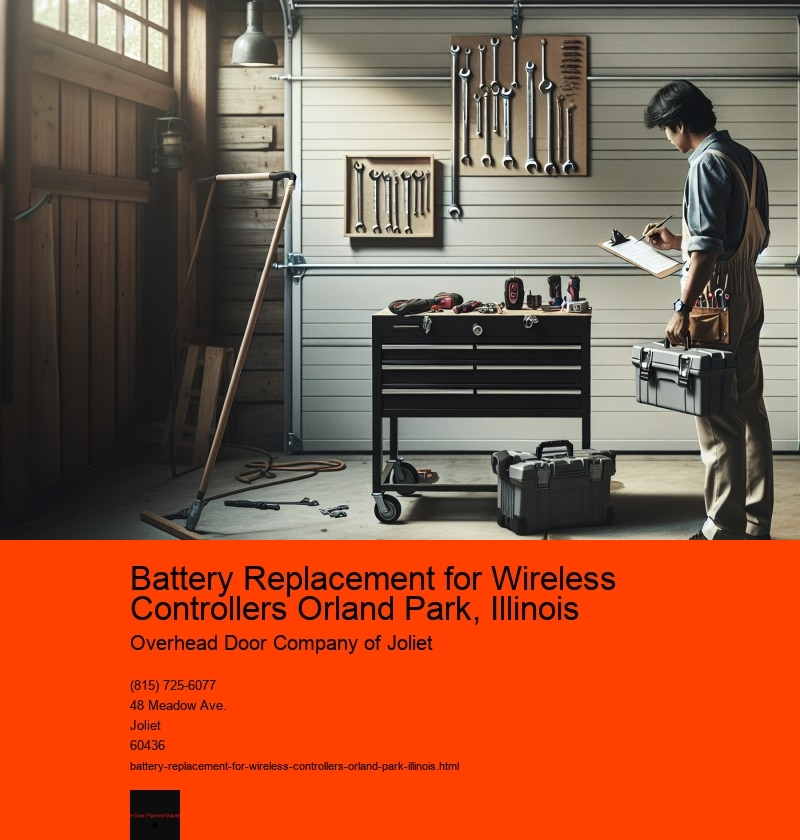

In todays rapidly advancing digital age, wireless controllers have become a staple in many households, particularly among gaming enthusiasts. These devices offer the freedom to play games without the constraints of wires, enhancing the overall user experience. However, like all electronic devices, wireless controllers have components that require regular maintenance and occasional replacement to ensure optimal performance. One such component is the battery. In Orland Park, Illinois, battery replacement for wireless controllers is an essential service that ensures gamers continue to enjoy uninterrupted playtime.
Orland Park, a vibrant suburb of Chicago, is home to a diverse community that includes a significant number of tech-savvy individuals and avid gamers. As such, there is a growing demand for reliable and efficient services related to gaming equipment, including battery replacement for wireless controllers. The need for this service arises from the fact that the batteries in wireless controllers, whether they are rechargeable or disposable, have a limited lifespan. Over time, they may begin to hold less charge or cease to function altogether, necessitating replacement.
Replacing the battery in a wireless controller might seem like a daunting task to some, especially those who are not well-versed in electronics. However, it is a relatively straightforward process that can be handled by local electronics shops or tech-savvy individuals. Many stores in Orland Park offer specialized services for gaming consoles and accessories, including battery replacement. These stores often stock a variety of batteries to cater to different models and brands of wireless controllers, ensuring that customers find the right fit for their device.
Moreover, the community in Orland Park benefits from a range of online resources and tutorials that guide users through the battery replacement process. These resources, often available on platforms like YouTube or specialized gaming forums, provide step-by-step instructions, making it easier for individuals to perform the replacement themselves if they choose to do so. This DIY approach not only saves time but also offers a sense of accomplishment to those who prefer to tackle the task independently.
In addition to local services and online resources, the importance of sustainable practices in battery disposal cannot be overstated. Many stores in Orland Park emphasize the proper disposal of old batteries, ensuring they are recycled responsibly. This practice helps mitigate the environmental impact of battery waste, aligning with the communitys growing commitment to sustainability and eco-friendly practices.
Furthermore, the convenience of having reliable battery replacement services in Orland Park extends beyond individual gamers. It also benefits families who rely on wireless controllers for various home entertainment systems. Whether its a family game night or a solo gaming session, ensuring that controllers are always ready to use enhances the overall enjoyment and functionality of these devices.
In conclusion, battery replacement for wireless controllers in Orland Park, Illinois, is a crucial service that supports the local gaming community. With a combination of expert services, accessible resources, and a focus on sustainability, the community is well-equipped to address the challenges posed by aging batteries in wireless controllers. As technology continues to evolve, so too will the methods and practices surrounding battery replacement, ensuring that gamers in Orland Park can continue to enjoy their favorite pastimes without interruption.
